世界の葉巻ニュース 特集
特集 — ドリュー・エステート
このシリーズで二人の「卒業生」を追ってきました。第10弾の スティーブ・サカ、第11弾の ニコラス・メリーロ。二人が巣立った場所――ドリュー・エステートそのものを、今回は追います。ワールド・トレード・センターの16平方フィート（約1.5㎡）のキオスクから始まったこの会社は、香りを付けた葉巻 ACID で市場の入口を広げ、「自分たちのための葉巻」だった リガ・プリバーダ No.9 で伝統派の頂点に触れ、ニカラグア最大級の工場を擁する帝国になりました。そして2014年、その帝国は機械巻き葉巻の巨人 Swisher に買収されます。創業者は一度経営を離れ、2年後に「稼いで取り戻した」社長として呼び戻された。もう一人の創業者は、葉巻業界を去って映画監督になった。
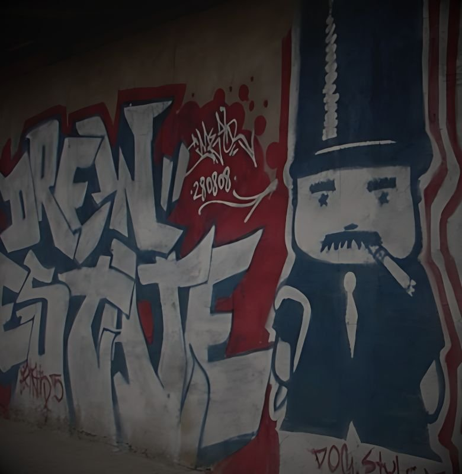
前回（第12弾プラセンシア）の結びで、私たちは問いを残しました。「インフュージョンの革命児が、リガ・プリバーダを生み、二人の卒業生を輩出し、買収と再編を経て、今どこに立っているのか」。2026年は、この会社の創業30周年にあたります。その年に、10年近く運営を担ったCEOが急逝し、後継者は未発表のまま。創業者は新たに「最高イノベーション責任者」を兼ね、自分の名を冠した小さな家族工場を帝国の内側に作り、会社はニカラグア国外で初めての自社工場をドミニカ共和国に開こうとしています。本特集は、母体の30年をたどり、その問いへの「現在形の答え」を探す回です。
本特集の事実関係は、専門誌・業界誌（Cigar Aficionado、Cigar Journal、Halfwheel、Cigar Coop、Cigar Dojo、Tobacco Reporter）、小売大手のブランド史（Holt's、Smokingpipes）、会社公式サイトと公式発表、創業者本人の動画・ポッドキャストでの発言と SNS での開示で裏取りした範囲に基づきます。規模の数字（工場の面積、1日の生産本数など）は会社側の発表に依るものが多く、本文ではその都度、誰の数字かを分かるように書きました。資料によって年や数字が揺れる箇所（創業年、ヘレーラの移籍年、生産規模など）は検証欄に明記し、本文では断定を避けています。日本国内の状況は、当編集部が財務省の認可リストと国内販売店の掲載を照合した日本葉巻データベース（2026年11月18日時点）に基づきます。米国価格は当時の公表価格で、円換算は $1＝¥160 で計算しました。
◆ 一、16平方フィートのキオスク ― 1996年、ニューヨーク
始まりは、葉巻の世界とはほど遠い場所でした。1996年、ジョナサン・ドリュー と マーヴィン・サメル がニューヨークで創業します。二人は大学のフラタニティ（友愛会）の兄弟分でした。最初の売り場はワールド・トレード・センターの中の小さなキオスク、わずか約16平方フィート（約1.5㎡）。ジョナサン本人の公式ページによれば、店の名は「QC Cigar Company」。本拠はブルックリンの DUMBO 地区に置かれました。会社の定型文が今も「1996年、ブルックリンで創業」とうたう、その出発点です。
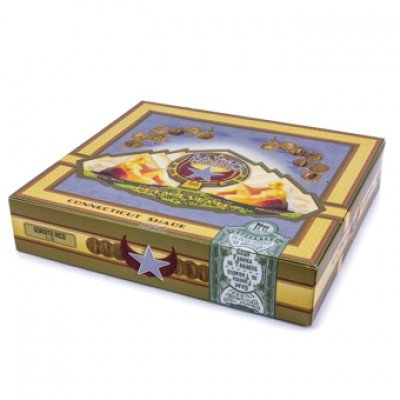
最初のブランドは ラ・ビエハ・ハバナ。ただし自前の工場はなく、生産は ニック・ペルドモ との提携に依存していました。第11弾でメリーロが回想した「2003年の着任時、ドリューはペルドモの家の裏で操業する規模だった」という証言とも重なります。転機は1998年後半、ジョナサンがニカラグアのエステリへ移住したことでした。マーヴィンはブルックリンに残って米国側を守り、ジョナサンは葉と生産の現場に入る。同じ頃、ハリケーン・ミッチがニカラグアを襲って生産を止め、この若い会社に方向転換を迫りました。キオスクの商売から、作り手への転身です。
◆ 二、ACID ― インフューズドという文化事件
1999年、ドリュー・エステートは ACID を発売します。葉を芳香室（アロマ・ルーム）で100種を超えるボタニカルやハーブ、エッセンシャルオイルと共にキュアする「インフュージョン」という製法の葉巻でした。ブルックリンのオフィスを共有していたアーティスト、スコット・"ACID"・チェスター との協働でブランド化され、グラフィティやアーバンアートの意匠がそのまま箱とリングになりました。代表作 クバ・クバ は、米国で最も売れるロングフィラーの一つになったとされます。
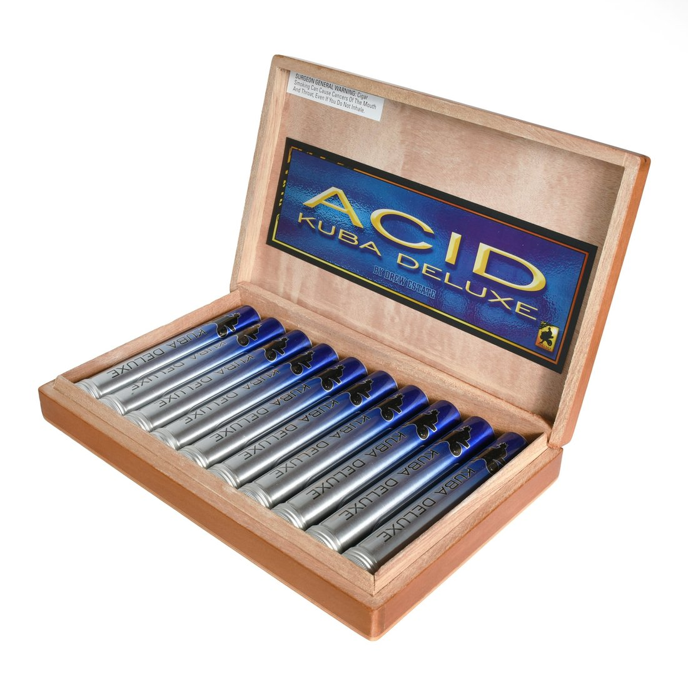
伝統派からは異端視されました。しかし ACID が果たした役割は大きかった、と業界の総括は一致します。「葉巻を吸ったことのない層」を取り込み、米国市場の入口そのものを広げた。会社のマニフェスト「The Rebirth of Cigars（葉巻の再生）」は、ここから来ています。伝統を壊すのではなく、入口を増やす――この「反逆」は、やがて正反対の方向、すなわち徹底して伝統的な葉巻づくりへの挑戦と表裏一体になっていきます。
◆ 三、大聖堂 ― ラ・グラン・ファブリカ
2000年代前半、ドリューの生産はエステリの街中に分散した 11軒の借家 で行われていました。需要の伸びに現場が追いつかなくなったとき、会社は谷とタバコ畑を見下ろす土地を買い、統合工場を建てる決断をします。2006年9月に着工し、2007年に移転、2008年9月に完全竣工した ラ・グラン・ファブリカ・ドリュー・エステート。面積は96,000平方フィート超（会社発表）。会社は「ニカラグア最大の葉巻工場であり、世界のプレミアム葉巻工場の5指に入る」と表現します。スペイン／グレナダ風の建築に、社内アーティストのグラフィティ壁画。工場そのものがブランドの舞台装置になりました。
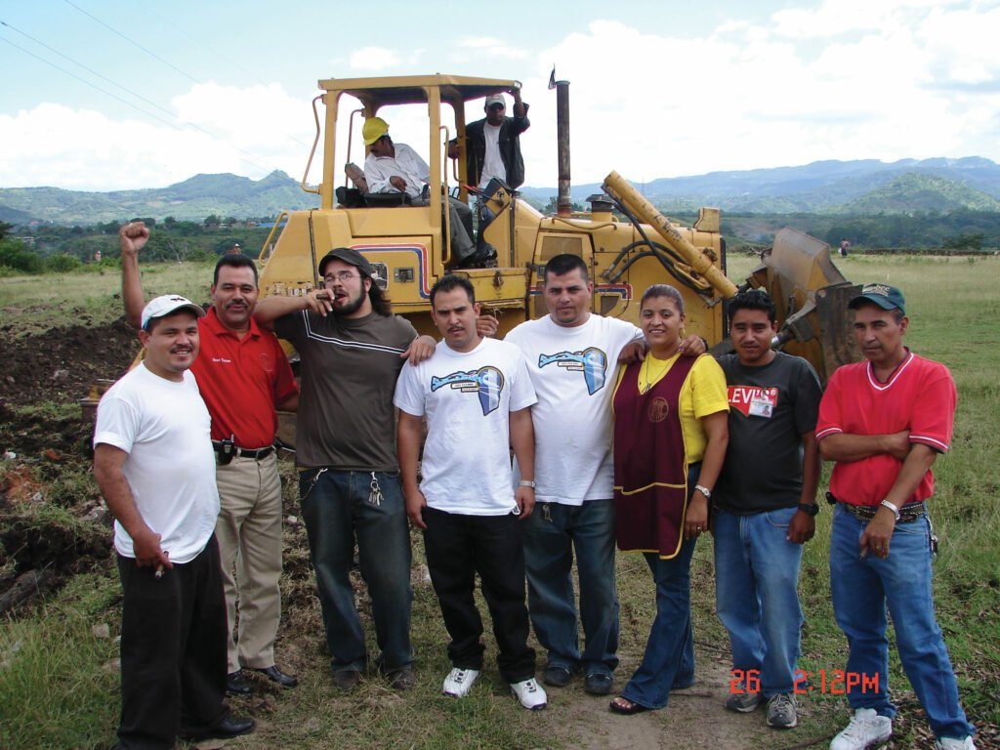
生産規模の数字は、会社側の発表でも時代によって揺れます。古い会社テキストでは1日94,000本、新しい小売転記では135,000本。そして2026年のジョナサン本人の口頭では「1日約25万本（約85%がロングフィラー）」から「ロングフィラー1日30万本」まで幅があります。本特集では、本人の口頭として「25万〜30万本／日（2026年）」と幅で記します。いずれにせよ、この工場の運営実務を担ったのが、第11弾の主人公メリーロでした。そして次章の二つの看板は、この大聖堂の中で生まれます。
◆ 四、王と王子たち ― リガ・プリバーダとアンダークラウン
リガ・プリバーダ No.9 の起点は2005年夏、「自分たちのための葉巻」として始まった私的なプロジェクトでした。50種を超えるブレンドを試作し、土台ブレンド「#9」が最終形になります。市販デビューは2007年。コネチカット・ブロードリーフの濃厚な葉巻は、ACID の会社が作ったとは思えないほど伝統的で、しかも本物でした。2009年には姉妹ライン T52、同年11月には短いフィギュラード フライング・ピッグ が続き、No.9 は Cigar Aficionado の2015年 Top 10（94点）にも入っています。
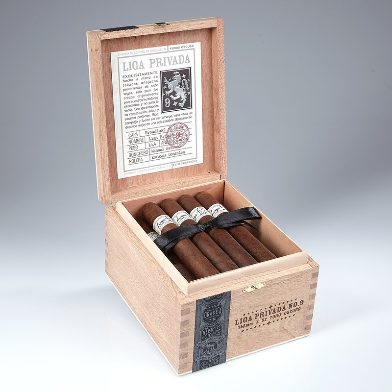
もう一つの看板 アンダークラウン の生まれは対照的です。リガ・プリバーダの喫煙を控えるよう求められたトルセドールたちが、自分のために作ったブレンドが原型でした。サカの言葉を借りれば「リガは王（ボス）のため、アンダークラウンは王子たち（巻き手たち）のため」。2026年、ウィリー・ヘレーラ本人が「オリジナルのアンダークラウン・マデューロは、私が来る前に工場の巻き場の特定のチームが作ったものだ」と明言し、巻き手発祥の物語は三者の証言で裏づけが揃いました。初回出荷は2011年9月。供給量を確保できる設計で、入手困難なリガの「受け皿」になりました。
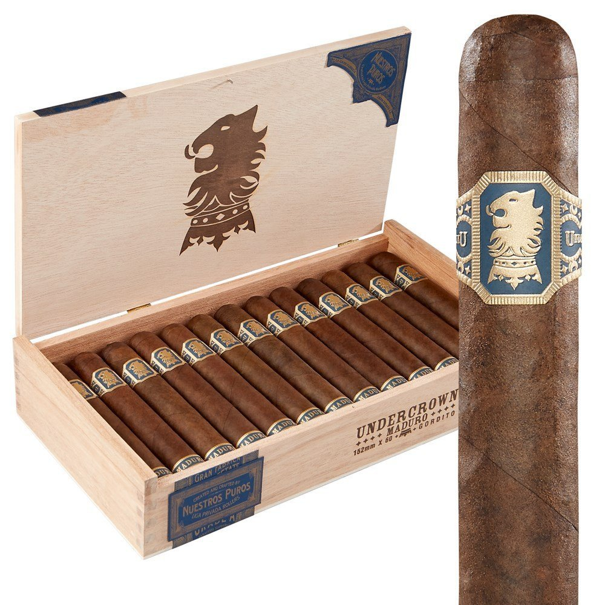
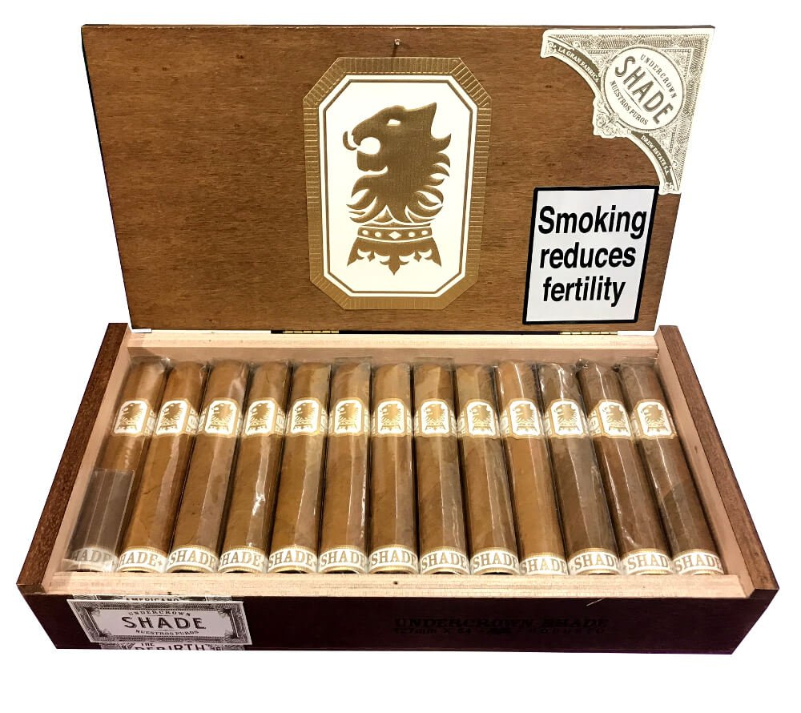
看板は生みの親の退社後も、会社側のチームで拡張され続けました。2018年7月には H99 と 10 アニベルサリオ を発表。H99 は2009年以来初の、レギュラー生産の新しいリガ・ラインでした。「卒業生を生んだ母体」は、卒業生なしでも看板を増やせる会社になっていたのです。
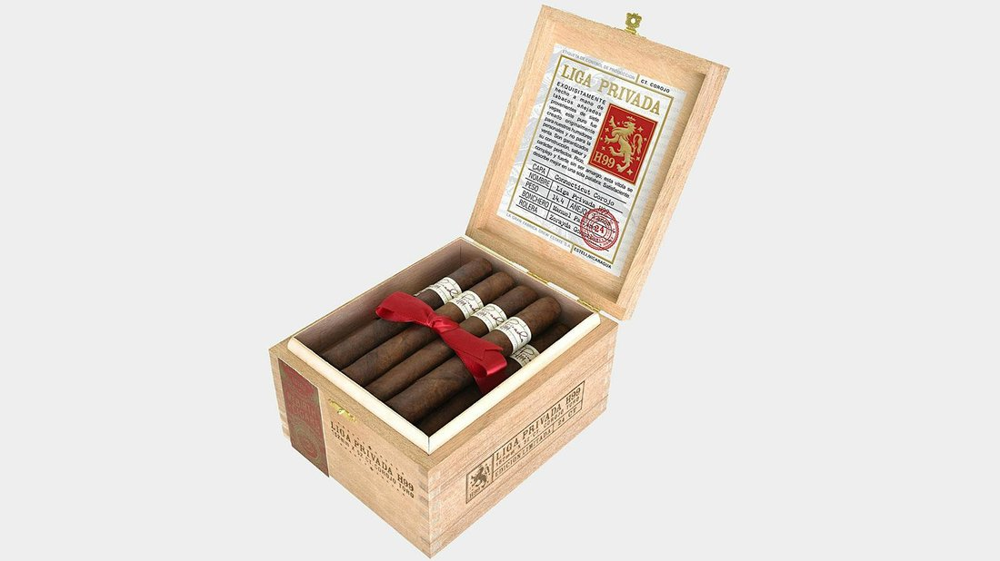
リガ・プリバーダ No.9 の成立については、第10弾・第11弾で「企画と最終判断＝サカ、創業者＝ジョナサン・ドリュー、葉の調達と工場側の実装＝メリーロ」という三人の役割分担で統一してきました。ただし格付けには注意が必要です。ジョナサン本人の語り（Cigar Coop Prime Time Ep.136 など、当編集部が処理した本人の出演動画3本）からは、この分担の裏づけは取れていません。本人の物語の中心は「サカがいた年、ブロードリーフに賭けるかブラジルのハバノかの葉の選択」であり、メリーロの名前は出てきません。三人体制は卒業生側（サカ、メリーロ）の本人証言で組む整理として、本特集でもその旨を明示して使います。母体側が二人の退社に直接言及しない「沈黙」もまた、本特集の材料の一つです。
アンダークラウンの船出は順風ではありませんでした。ジョナサン本人の証言によれば、発売初期の出荷分は、箱の木片の湿度が原因で軒並みドロー（吸い込み）が詰まる失敗に見舞われたといいます。「王子たちの葉巻」は、現場の失敗と修正の積み重ねの上に立っています。なお、本人は近年の対談で「ドリュー・エステートの道を開いたのはリガ・プリバーダではなく、Cigar Safari（工場見学ツアー）だ」と、世間の通説を自ら訂正しています。転機の再定義として、九章でもう一度触れます。
◆ 五、伝統への橋 ― ウィリー・ヘレーラの引き抜き
2011年、ドリュー・エステートは「伝統の正統性」を買う一手に出ます。マイアミ・リトルハバナの家業工場エル・ティタン・デ・ブロンセで約6年、ブレンドと生産を担ってきたキューバ系の作り手、ウィリー・ヘレーラ の引き抜きです。彼が初めてラ・グラン・ファブリカを訪れた際に作った3つのブレンドは、いわば「採用試験」でした。会社発表では2011年6月15日にドリュー・エステート入りし、ヘレーラ・エステリ は IPCPR 2012 で披露され、2013年初頭に正式デビュー。2014年にはマスターブレンダーへ昇格しました。
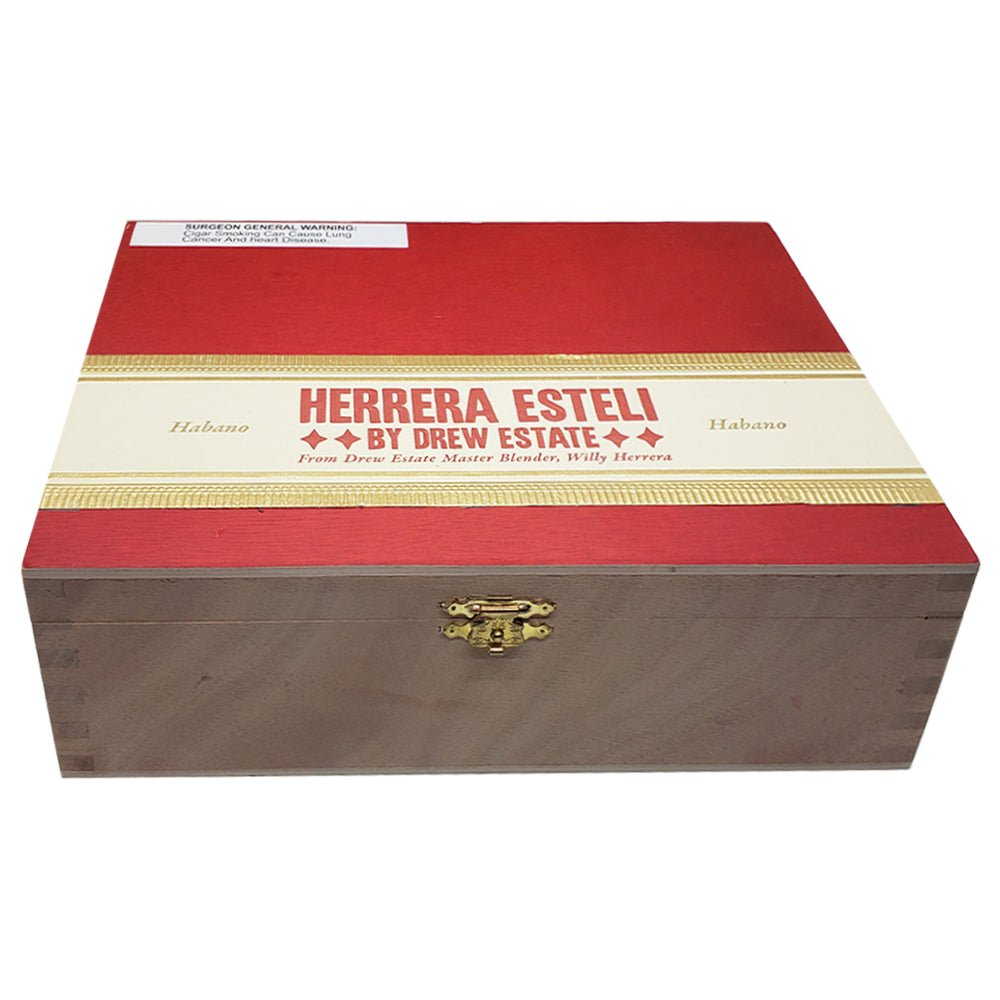
ただし本人の最新の語りは、会社の発表と1年ずれます。2026年の証言でヘレーラは「2009年後半、展示会の直後に声をかけられ、家族と相談して2010年に移籍した。ニカラグアへ移って最初の約1年半を現地で過ごした」と語り、ヘレーラ・エステリ第1弾の発売も「2012年」と記憶しています。本特集では本人の時系列を軸に、会社発表の日付を併記する形を取ります（検証欄）。意味づけは明確です。サカ在任中のこの引き抜きで、インフューズドの会社は伝統系ブレンドの「表の顔」を得ました。二人の卒業生が去った後、その顔が会社の伝統を担い続けることになります。
移籍の年次は、会社発表（2011年6月15日入社。Halfwheel が当時の発表を引用）と、本人証言（2009年後半に声かけ、2010年に移籍。2026年の動画証言）で1年ずれます。第1弾の発売年も本人の記憶（2012年）と通説（2013年初頭デビュー）で幅があります。本編では単一の年に断定せず、両方を記しました。
◆ 六、株主だった三人 ― 2008年の危機
急成長の裏側で、会社は静かに傷んでいました。Holt's のブランド史は率直に記します。会社は過剰債務に陥り、債権者の圧力で2008年に100人超のレイオフを余儀なくされた、と。当時の経営陣は、社長 スティーブ・サカ、営業VP マイケル・セルーチ、生産ディレクター ニコラス・メリーロ。そして重要なのは、三人とも会社の持分を持つ株主だったことです。
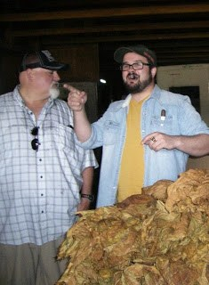
「才能ある幹部が持分を持つ」構造は、平時には結束の証しでした。しかし会社が売られるとき、この持分はそのまま「独立の資金」に姿を変えます。母体の物語の伏線は、ここに張られていました。
◆ 七、卒業生たち ― 二人が去った後の母体
卒業生その1、サカは社長（2005年）から CEO を務め、2013年7月11日 が最終勤務日でした。退社は円満で、保有分は買い取られ、競業避止は2015年6月に満了。その先に Dunbarton の創業があります（第10弾）。卒業生その2、メリーロは2014年に退社しました。本人の明言する理由は「FDA 規制で新しいブランドを作れる期限への恐怖」。小口株主として残っていた彼は、後述する買収の際に持分を買い取られ、その資金で Foundation を全額自己資金で創業しました（第11弾）。Cigar Coop は2015年の総括で、二人を「Drew Estate Alumni（ドリュー・エステートの卒業生）」と呼びました。
二人が去った後、母体はどう変わったのか。伝統系ブレンドの顔は、マスターブレンダーのヘレーラと社内チームへ移り、リガ／アンダークラウンは生みの親なしで拡張を続けました（四章の H99 など）。工場の表の顔は、スポークスマンの ペドロ・ゴメス が担います。そしてブランド戦略は、コラボレーションとライフスタイルの拡張へ大きく舵を切りました。
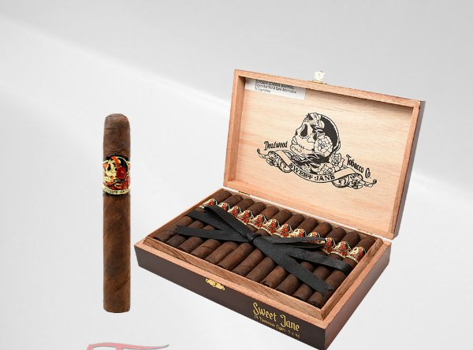
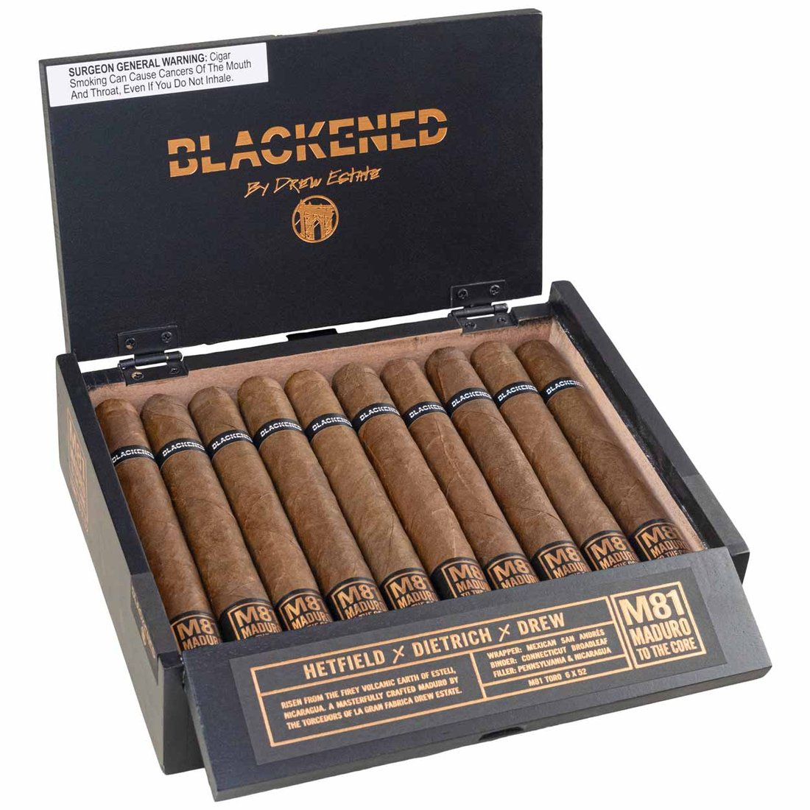
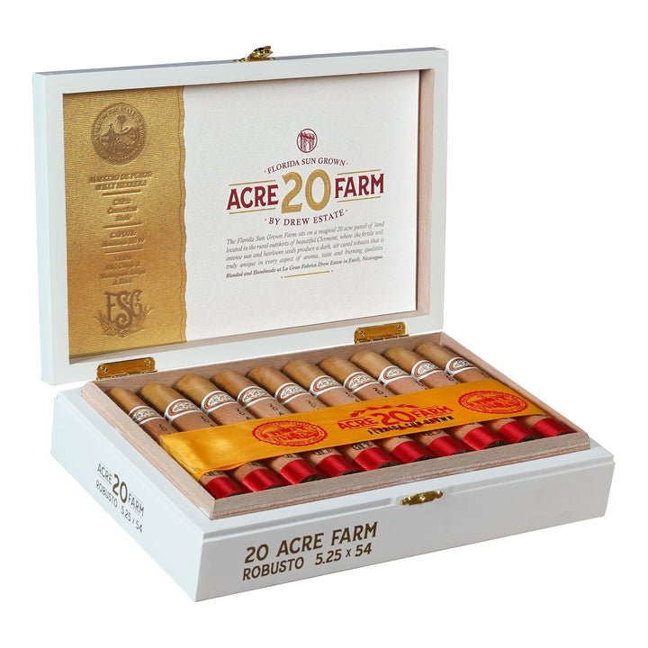
デッドウッド の全国展開（2016年）、バーボンの樽で発酵させた パピー・ヴァン・ウィンクル、量販ラインの ファクトリー・スモークス（2018年）、フロリダ産の葉を使う 20エーカー・ファーム（2021年）、そしてメタリカのジェイムズ・ヘットフィールドらとの ブラッケンド M81（2022年、Cigar Aficionado Top 25 of 2023 第7位・95点）。「卒業生を生む学校」は、AJフェルナンデスにおけるプラセンシア（第5弾・第12弾）のように、ドリューにも成立しています。巣立った二人がブティーク時代の主役になり、母体は大衆とコラボの帝国へ姿を変えていく。その分岐が、この会社の2010年代です。
◆ 八、買収 ― 反逆児は巨大企業の傘下へ
2014年10月、Swisher International がドリュー・エステートの買収に合意しました。Swisher はフロリダ州ジャクソンビルの、機械巻き葉巻（Swisher Sweets）で世界最大級のメーカーです。買収額は非公表。Holt's によれば、取得対象はブランド・ポートフォリオ全体とラ・グラン・ファブリカ、そして 2,000万ドル（約¥32億円）相当のタバコ在庫 でした。発表の形では、創業者二人は買収後も会社に残るとされました。
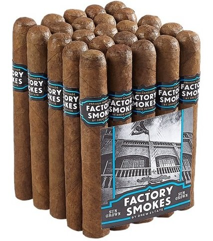
時系列の注意が要ります。サカの退社（2013年7月）は買収より前であり、メリーロの持分買取は買収の際のことです。「買収で二人が追われた」という単純な物語は、事実の並びと合いません。そして本当のドラマは、もう一人の創業者に起きました。売却後の約2年間、ジョナサン・ドリューはドリュー・エステートの経営実務の役職に就いていなかったのです。この間、彼は自身のスピリッツ事業 John Drew Brands の CEO を務めていました。イベントで創業者の顔として立つことはあっても、オペレーションの役職ではありませんでした。
◆ 九、呼び戻された創業者 ― もう一人は映画へ
2017年1月30日、ドリュー・エステートは発表します。ジョナサンが複数年契約で経営の役職に復帰し、肩書きは「President and Founder（社長兼創業者）」。CEO グレン・ウォルフソンへの直属で、全ブランドを統括する。ウォルフソンは発表で彼を「最初の破壊者（the original Disruptor）」と呼びました。本人の言葉はもっと率直です。「新CEOのグレンが、私に社長の座を稼がせた。私の社長復帰は、稼いで取り戻したものだ」。彼はウォルフソンを自らの「コーチ」と呼び、自身を「4代目社長」と位置づけます。つまり「離脱と復帰」の実像は、解雇や対立ではなく、売却に伴う2年間の実務離脱と、創業者社長としての呼び戻しでした。
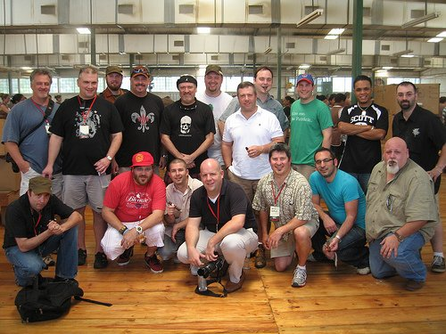
対照的なのが、もう一人の創業者です。マーヴィン・サメルは買収後しばらく会社に残りましたが、やがて葉巻業界を離れました。現在は映画人です。父モルデカイ（ホロコースト生存者）を描く映画『iMordecai』の脚本・製作・監督を務め、彼の SNS の発信も今は映画のことだけです。帝国の創業者は二人いた。一人は呼び戻され、一人は映画へ。この対照が、買収という出来事の人間的な断面を物語ります。
2026年、PCA の場でジョナサンは、売却について初めて後悔を言葉にしました。「売ることはとても辛かった。多くの後悔があった」。ただし注意が要ります。彼は2020年にも2026年にも、Swisher を「正しい会社、完璧な組み合わせ」「反骨を失わせようとしなかった」と一貫して肯定しています。後悔は売却先への不満ではなく、自分の会社を手放したこと自体への感情です。この二層構造――肯定と後悔の同居――が、次の章の「13年」という数字に姿を変えて現れます。
◆ 十、離婚 ― ホヤとの17年
ドリューと ホヤ・デ・ニカラグア の関係は深いものでした。ドリューは2008年4月25日、SAG Imports からホヤの米国流通を引き継ぎ、17年間、その営業網でホヤを全米に売ってきました。共同ブランドの時代もあった両者の関係に、終わりが来ます。2025年9月29日、ホヤは終了を発表しました。2026年1月1日から、ホヤは自前の新会社で米国の流通・販売を自社化する。関係は円満で、マルティネス・クエンカ会長は「自らの道の主導権を握る」ためと説明し、ジョナサンはホヤへの敬意と友情の継続を表明しました。
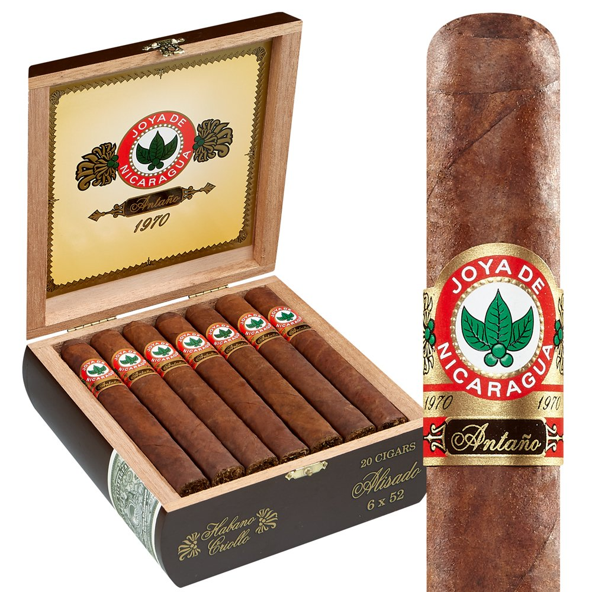
そして2025年12月12日、後継の形が確定します。ホヤとケサダが共同の米国流通を発表し、SAG Imports が復活 して両ブランドの流通会社になる。構造はケサダ家とマルティネス家（ホヤの所有家）の合弁です。つまり「離婚」の行き先は、2008年にドリューが引き継いだ相手への回帰でした。象徴的なのは沈黙です。発表の前後、ドリューの公式 SNS にホヤへの言及はなく、ホヤ側の自社化はドイツなど世界各地でも同時期に進んでいました。ドリュー側も同じ頃、ドイツやオランダの流通を組み替えています。2020年代後半の葉巻業界では、流通の「自前化」が静かに進んでいるのです。
◆ 十一、30年目の転機 ― 柱を失った年
2026年は創業30周年、「DE30」の年です。会社は記念のプログラムや記念サイズを展開し、秋にはリガ・プリバーダの3ライン（H99／No.9／T52）を小分けパックにした リガ・プリバーダ・ペタカス を送り出しました。その祝祭の年の、運営の柱が失われます。
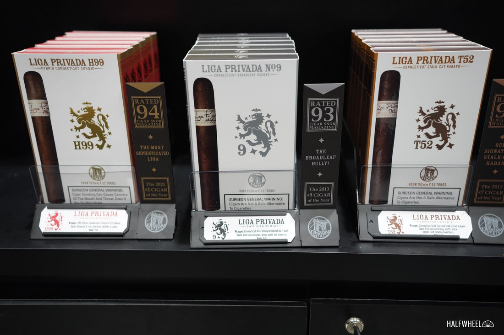
グレン・ウォルフソン は、経営コンサルティング34年の経歴から2016年に CEO に就いた変革型の経営者でした。ジョナサン（創造）とウォルフソン（運営）の二人三脚は約10年続きます。2026年5月14〜16日、会社はイノベーション部門を正式化し、ジョナサンは新設の Chief Innovation Officer（最高イノベーション責任者） に就きました（社長は継続）。ウォルフソン自身は PCA 2026 の時点で、2026年末での退任意向を示していました。ところが 2026年6月29日、ドリュー・エステートはウォルフソンの死去を発表します。70歳。膵臓がんの治療中であることを、同年5月にチームへ明かしていました。Cigar Aficionado の追悼は「CEO 就任から10年に、数週間足りないところだった」と記しました。
そして、後継 CEO は2026年11月18日時点で、まだ発表されていません。新 CEO が正式に発表されるまで、経営陣が会社を率いる体制です。創業30周年の年に、運営の柱を失い、創業者が前面に出る形で、会社は転機を迎えています。前回のプラセンシア編の問い――「今どこに立っているのか」――への答えの核は、この空白にあります。
◆ 十二、帝国の内側の家族工場と、第二の故郷 ― J.Sann & Son とドミニカ
2026年2月10日、もう一つの布石が打たれました。ドリュー・エステートとジョナサン個人の提携による J.Sann & Son の設立です。マイアミ・ウィンウッドに小売と小規模製造の拠点を置き、工場の生産は1日約500本の計画。ジョナサンの正式な名乗りは Jonathan Drew Sann であり、「& Son」は、将来その役を継ぐと本人が語る息子 JD2 への継承を名前に埋め込んだものです。ただし、これは「独立」ではありません。生産・発酵・熟成はラ・グラン・ファブリカで行う共有サービスの枠組みで、流通もドリューが担います。本人は「私は決して離れない」と明言し、この営みを「個人的な再生（personal rebirth）」と呼びました。帝国の内側に作った、息子のための家族工場。それは1996年の小売キオスクへの「里帰り」でもあります。
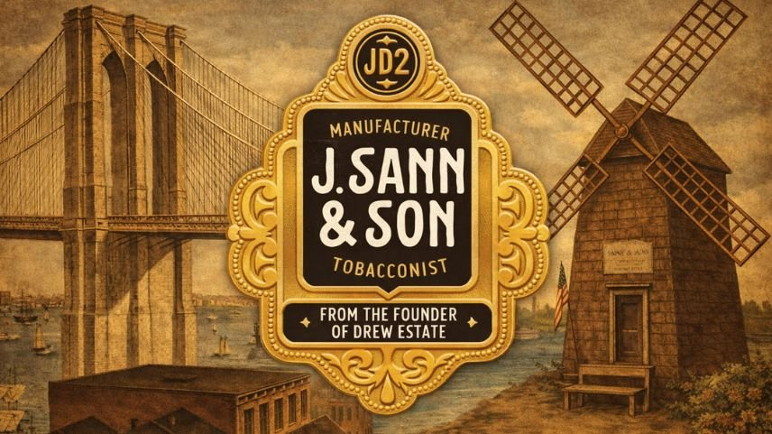
J.Sann & Son の新銘柄の一つは THIRTEEN YEARS と名づけられました。「13年」とは、売却（2014年）から J.SANN 開業までの歳月です。本人は同期間を「THIRTEEN YEARS in the desert（砂漠の13年）」と呼びます（2026年5月、本人の SNS）。社長の座を「稼いで取り戻し」、CIO になり、それでもなお自分の名の工場を作る――その歳月への名づけ自体が、創業者の物語の証拠物件になっています。対照的に、2026年5月の CIO 就任は、会社公式・本人の SNS のどちらにも投稿されませんでした。会社の統治の話は SNS の外、創業者物語だけが SNS の中。その使い分けも、この会社の現在形を映しています。
第二の動きは、国境を越えます。2026年4月17日、ドリューはニカラグア国外で初の自社工場「Drew Dominicana」をドミニカ共和国に開くと発表しました。当初発表では73,000平方フィートの製造複合施設（後の報道では76,000平方フィート）とされ、農場を率いるのは、長年ダビドフのドミニカ事業の要だった栽培・種子開発者 マヌエル・ペラルタ。移管予定のラインには アンダークラウン・エル・ティグレ・ドミニカーノ などが含まれます。2026年11月9日には、Drew Estate Dominicana が ProCigar（ドミニカの葉巻協会）の12番目のアクティブ会員として承認されました。工場長にはユニバーサル・リーフの長年の幹部 フアン・アブラハム・ムスタファ が2027年1月1日付で就任し、巻き始めは2027年後半の見通しです。ジョナサンの言葉を引けば――「ニカラグアは永遠に我々の本拠だが、今日ドミニカ共和国に公式の旗を立てる」。息子 JD2 にとってサンティアゴは「4つ目の故郷の街」になる、とも。
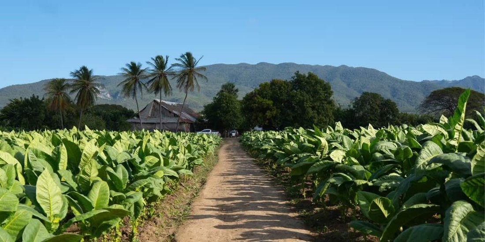
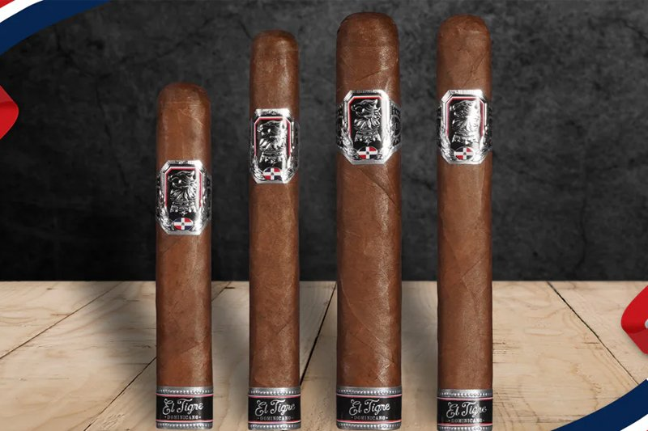
◆ 日本編 ― 広く届いて、輸入元だけが分からない
日本でのドリュー・エステートの景色は、第11弾ファウンデーションの「0品目＝完全未上陸」とも、第12弾プラセンシアの「輸入元が判明した30品目」とも違います。当編集部の日本葉巻データベース（2026年11月18日時点）では、ラ・グラン・ファブリカ製は 34品目。うち 14品目が国内で販売確認済み で、販売店は 大越酒店 さん（最多）と AUN Smoke さんです。看板のリガ・プリバーダ No.9 ロブストは定価 ¥3,630 で販売確認があり、ダーティ・ラット（¥3,190）、アンダークラウン各サイズ、ヘレーラ・エステリ・ノルテーニョ（¥2,420）、ニカ・ルスティカ（¥1,800〜2,000）も棚に並びます。一方で、米国最大の看板である ACID は、ブロンディ（定価 ¥2,600）1品目が認可のみで販売未確認。会社の最大の顔が、日本では最も薄いという落差があります。
| ライン | 日本DB | 販売確認 | 備考・代表価格 |
|---|---|---|---|
| リガ・プリバーダ No.9 系 | 6品目 | 2品目 | No.9 ロブスト 定価 ¥3,630／ダーティ・ラット ¥3,190（いずれも大越酒店さん） |
| リガ・プリバーダ T52 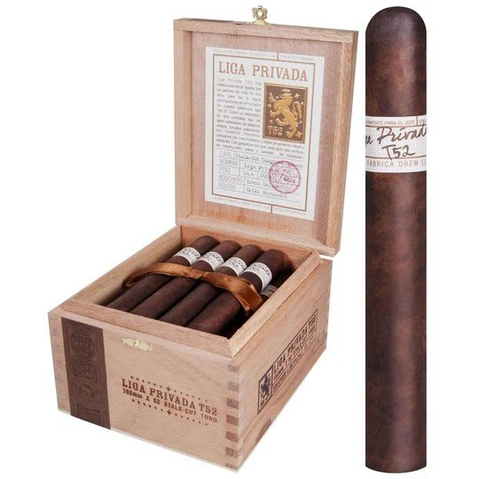 | 1品目 | なし | ティン（4×32）のみ認可 |
| アンダークラウン | 8品目 | 5品目 | マデューロ・コロナ・ドブレ ¥2,640／シェード・ロブスト ¥1,980 ほか |
| ヘレーラ・エステリ | 3品目 | 1品目 | ノルテーニョ ¥2,420（販売確認）／ブラジリアン・マデューロ ¥3,300／マイアミ ¥3,900 は認可のみ |
| ACID 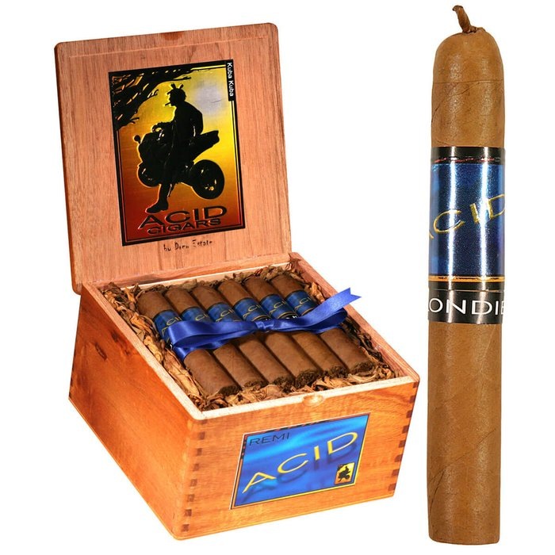 | 1品目 | なし | ブロンディ 定価 ¥2,600、認可のみ。米国の最大看板が日本では最も薄い |
| ニカ・ルスティカ 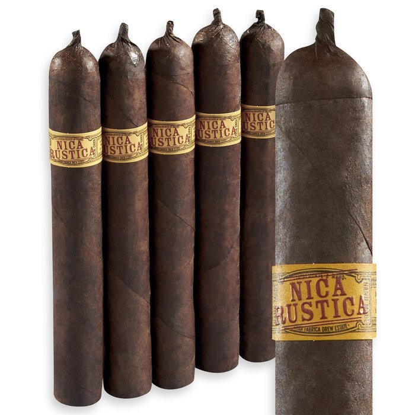 | 2品目 | 2品目 | アドベ ¥1,800／ブロードリーフ ¥2,000（大越酒店さん） |
| ケンタッキー・ファイア・キュアード 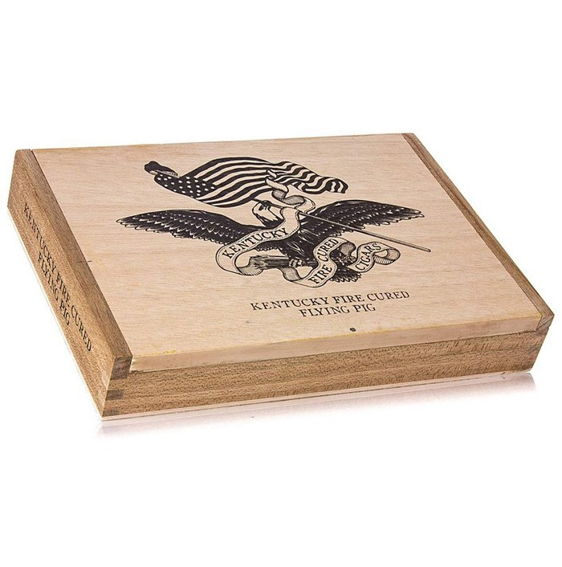 | 5品目 | 1品目 | スイート・チャンキー ¥1,500（販売確認）。ほかは認可のみ |
| タバク・エスペシャル 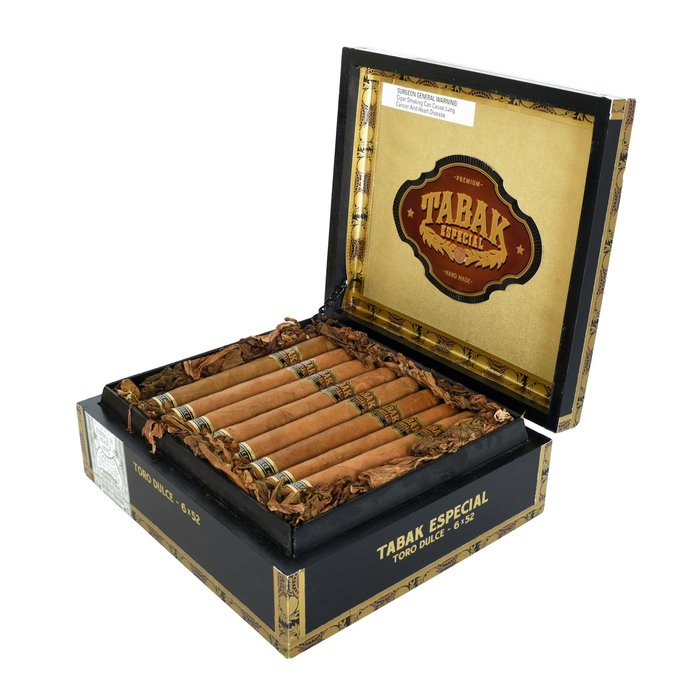 | 5品目 | 2品目 | カフェシータ ¥440（AUN Smokeさん）ほか |
| デッドウッド | 1品目 | なし | ベイビー・ジェーン・ティン ¥440、認可のみ |
| イスラ・デル・ソル | 2品目 | なし | ティン2種 ¥330、認可のみ |
そして、正直にお伝えすべき点がひとつあります。輸入元は、34品目すべてについて「不明」 です。プラセンシアのときのように販売店の商品データから輸入元欄をたどる方法でも、今回の調査では特定に至りませんでした。広く認可され、一部は実際に売られているのに、誰が日本に運んでいるのかがデータベース上で空白のまま。これは当編集部の調査課題として、明記しておきます。
34品目の内訳は、ブランド欄「Drew Estate」32品目＋「Isla Del」2品目で、全品目がラ・グラン・ファブリカ製として登録されています。認可の確認は財務省認可リストによるものが30品目、原典照合によるものが4品目。販売確認14品目の内訳は大越酒店さんと AUN Smokeさん の掲載に基づきます。輸入元は全品目で輸入元欄が「不明」のため、本編では推測を書かず、調査課題として明示しました。
◆ 結び ― 母体は今、どこに立っているのか
16平方フィートのキオスクから始まった会社は、30年で姿を変え続けました。インフューズドの反逆児は伝統の看板を持ち、二人の卒業生を生んだ母体は巨大企業の傘下に入り、創業者は一度去って、稼いで戻って、今は帝国の内側に息子のための工場を作っています。2026年のドリュー・エステートは、30周年の祝祭と、CEO の不在と、ドミニカへの旗とが同居する、まさに転機のただ中にあります。後継 CEO の発表が、この物語の次の大きな節目になるはずです。
このシリーズの縦糸も、ここで一巡しました。プラセンシアという「葉の学校」、そしてドリューという「人の学校」。巣立った者たちの物語は、母体の物語と合わせ鏡になっています。あなたのヒュミドールのリガ・プリバーダを手に取るとき、その向こうに、キオスクと大聖堂と「砂漠の13年」があることを思い出してください。